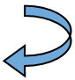

Free
powerpoint
Tutorials
|
Free
powerpoint
Tutorials
|
|
| home | Stay at Home and Learn | ||||
PowerPoint and Presentation Tips |
|||||
|
How many slides should I have in my Presentation?Imagine you're sitting down to a presentation, and the person giving the talk moves to the first slide. On it you see this: Slide 1 of 48 What is your reaction? Are you delighted that there will be such a long presentation, thus enabling you to stay away from your desk for a really long time? Or do you silently scream with frustration and think, HOW MANY! Most people will be extremely annoyed if your presentation contains that many slides. But how many slides should your presentation contain? Experts all agree - the fewer the better. It's recommended that when delivering a presentation to an audience that you have no more than 10 slides. You should talk about these slide for 20 to 30 minutes. If you're going to be in front of your audience for 1 hour, the rest of the time can be taken up with questions and answers.
What makes for a good slide?A good slide is an intriguing slide, with very little text, and quality images. A slide should make the audience want to know more about what they are seeing. Slides that have lots of small text, and poor clip art images won't win you any points. For example, consider a talk about global warming. What's more effective, a huge bulleted list with facts and figures, or a single photo of a flood-drenched city?
Bullet PointsReign your bullets in! A mistake is to have too many slides with bullets on, and to have 5 or more items in each bulleted list. Some experts suggest dumping bullets altogether. If you can't do that, try to limit the bullets to just one slide - at the end under a" Conclusion" heading.
Slide TransitionsStudies show that the effects that work the best are Appear, Wipe and Box Out. People seems to like these, while turning their noses up at the others.
TimingSome experts advocate that you time your presentations down to the last second, and leave nothing to chance. Others think that this is simply not necessary. If you know your subjects matter inside and out, then timing is irrelevant - you will be able to talk about each slide without glancing at notes, and just an occasional peek at the clock. We would go with the knowledge approach - there's just no substitute for knowing your stuff! If you're confident that you know what each slide is all about, then this can give you a great boost.
Too much movementIf you have web cam or video recorder, it can help to film yourself a few days before the big day. Go through your slide show and deliver it to an empty chair. Then watch your performance. Are your hands flying all over the place? Are you shifting about the stage, and disappearing off camera? Are you saying "Um" and "Er" a lot? If so, now's the time to iron out the rough spots. Which means, don't fidget, and stop waving your hands about like a maniac! Think slow and economical movements.
Setting UpMake sure you get to the location of the presentation nice and early. That way, you can handle any glitches or technical problems in good time. Your boss is not going to thank you if you're fumbling about with your laptop for half an hour trying to get the slide show to work.
PropsDon't forget your props, if you're giving a talk. The most effective props are pencil and note pads (so people can doodle away, rather than jotting down questions about your dazzling presentation), and handouts. By handouts, we don't mean that you should hand out a transcript of your entire presentation. You should never do this, as your audience will start reading it, instead of listening to you. By handouts, we mean things like product samples, cups of tea or coffee in porcelain cups, and not squeaky Styrofoam. If you order in some snacks like pastries, and other goodies, this tends to go down very well indeed, and is everybody's favourite handout!
Big MistakeDon't cram your slides with too much information, and NEVER read from
them word for word on the screen! Your audience has come to hear what
you have to say, not to read along with you.
Dry ThroatsDry throats are something of a hazard to presentation givers. Therefore, don't forget the water bottles!
Remote ControlYou really don't want to be groping around for a mouse as a way to get to the next slide. Use a remote control presentation gadget. They don't cost much, and allow you the freedom to concentrate on your talk, and not the mouse!
Eye contactMake plenty of eye contact with your audience. A bad presentation is one where you're reading from voluminous notes by your side, or constantly looking over your shoulder and reading from the slide. You should know what's on your slide, and what they are about with looking or reading.
And Finally …If you know your stuff, are well prepared, and fairly confident then there's nothing at all to worry about. So, relax: It's only a presentation!
|
||||